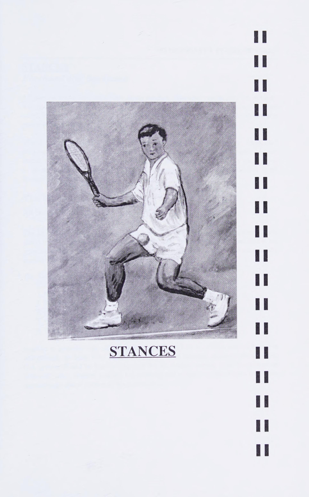
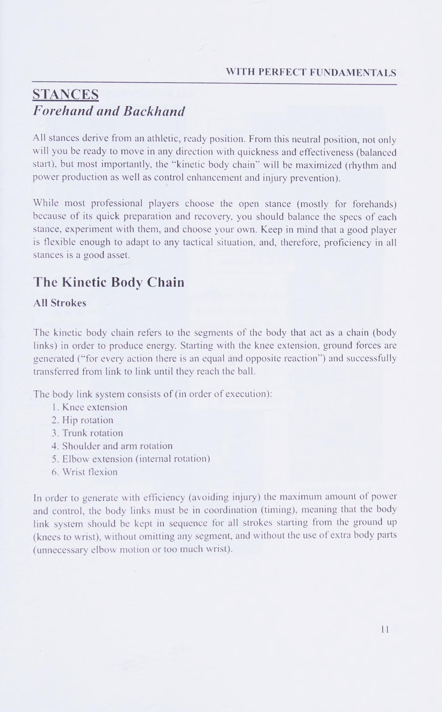
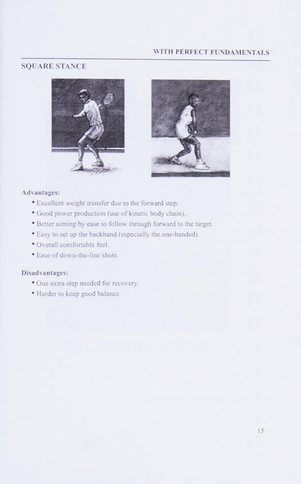
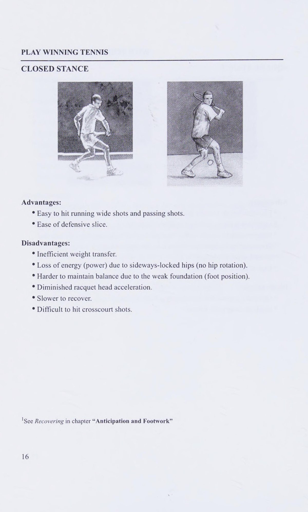

Phần I: Các Thế Đứng Căn Bản & Nghệ Thuật Mở Vợt (Stances & Backswing)
Phương pháp huấn luyện nền tảng chuẩn mực từ Julio Yacub: Tư thế sẵn sàng năng động, phân tích cơ học 4 thế đứng và tại sao mở vợt vòng cung (Loop) thống trị quần vợt hiện đại
1. Tư Thế Sẵn Sàng & Bốn Thế Đứng Nền Tảng
Mọi cú đánh đẳng cấp trong quần vợt đều bắt nguồn từ một tư thế sẵn sàng năng động (Athletic ready position).
Từ tư thế trung lập này, bạn không chỉ sẵn sàng di chuyển về mọi hướng với tốc độ bứt phá và sự thăng bằng tối ưu, mà còn tạo tiền đề để cơ thể chuyển giao nhịp nhàng vào một trong bốn thế đứng thi đấu cốt lõi:
Thế đứng Mở (Open Stance):
Hai bàn chân mở rộng song song với đường vạch cuối sân.
Ưu điểm vượt trội: Thời gian chuẩn bị cực nhanh, đặc biệt thiết yếu khi đối mặt với những cú giao bóng sấm sét hoặc những pha tấn công bóng nhanh cuối sân.
Thế đứng mở cho phép người chơi tích lũy mô-men xoắn mạnh mẽ từ cơ hông và phục hồi vị trí về trung tâm sân đấu nhanh hơn nửa giây.
Thế đứng Bán mở (Semi-Open Stance):
Bàn chân trước hơi chếch chéo về phía trước một góc bốn mươi lăm độ so với chân sau.
Đây là thế đứng linh hoạt và phổ biến nhất trong quần vợt hiện đại, cân bằng hoàn hảo giữa khả năng xoay hông và việc chuyển dịch trọng tâm tiến về phía trước.
Thế đứng Vuông góc (Square Stance):
Bàn chân trước bước thẳng vuông góc về phía lưới, hai bàn chân thẳng hàng với hướng đánh.
Ưu điểm: Sự chuyển giao trọng lượng từ chân sau sang chân trước diễn ra vô cùng triệt để, mang lại chiều sâu và sức đè bóng tuyệt vời cho các cú đánh tiếp cận (Approach shot).
Thế Tư thế đứng ngang (đóng) (Closed Stance):
Bàn chân trước bước vắt chéo qua thân người.
Thế đứng này thường được áp dụng trong các tình huống khẩn cấp khi người chơi bị đối phương ép chạy dạt ra ngoài biên hoặc khi thực hiện những cú đánh phản công dọc dây (Passing shot).



